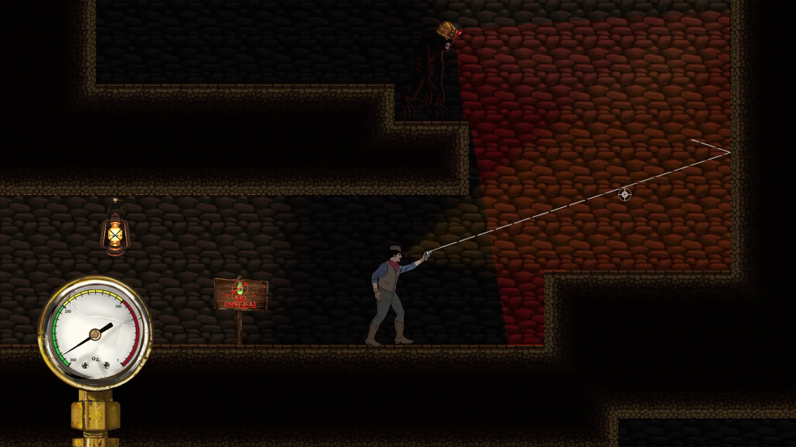
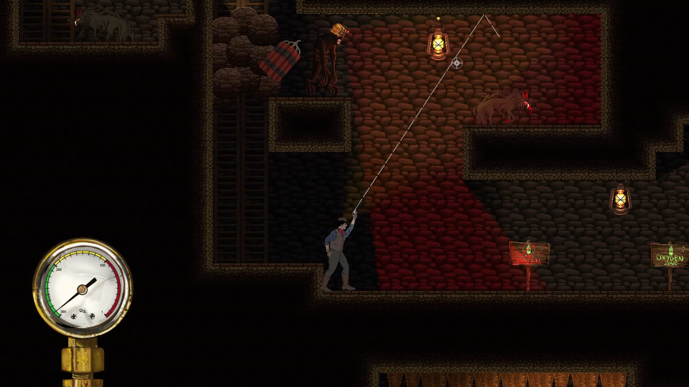
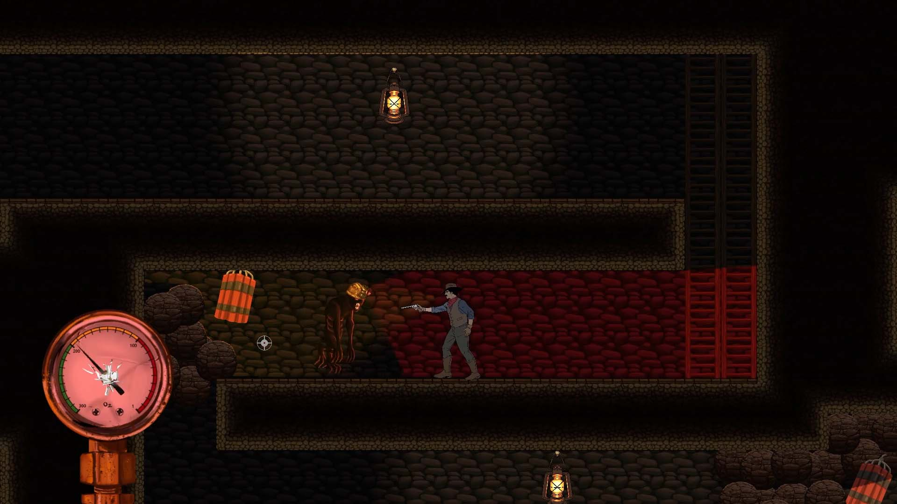

Durt is a 2D puzzle based platformer where you play as Durt, a cowboy stuck in the Appalachian Mountains. Durt needs to skillfully escape dangerous mines filled with terrifying creatures with the goal of making it out. Be wary because the creatures in this cave are extremely dangerous and being seen by one usually means the end of the road. Luckily for Durt, these caves exhibit unworldly behavior and cause bullets to ricochet. Durt must use this to his advantage to eliminate creatures without being seen.
Durt's core mechanic is using the pistol to ricochet bullets off of the terrain. Players need to assess their surroundings in order to effectively ricochet bullets without getting seen.  There are two types of enemies in the game: the wolf and the shade. The wolf is an extremely dangerous enemy because when it spots the player, it immediately runs toward the player to attack. If the wolf catches up to the player, the player will immediately die and need to restart. The player has a split second to shoot to wolf, however, the player should have used the ricochet to avoid getting in that situation.  Next, is the shade that is dangerous in a different way. Throughout the levels, Durt will run into areas that are have no oxygen. These are the areas that the shades inhabit. Durt must quickly move through these parts of the level to avoid sufficating. The shades will make this difficult because they suck oxygen away from the player if they see the player. Furthermore, if they see the player, they become invulnerable.  If the player is successfully able to traverse throughout the levels without getting seen, they will escape.
Durt was made as a small team of unique individuals. I acted as the lead engineer for the team as well as a designer when necessary, thus I was responsible for developing and programming the game. The game was made with the Unity 5 engine as well as C# scripts that controlled behavior. Aside from myself, there was also two artists, another engineer, and another designer. In order to balance the interdisciplinary team and ensure a deliverable product, the team utilized Agile methodologies for software development.
Durt was the first fully fledged game I made as a team. I learned so much and improved my skills in so many areas. This game was incredibly helpful in learning how to make software using Agile methods. In the past, the software projects I worked on were either by myself or in a team of just developers. It was hard to truly appreciate the usefulness of Agile in those scenarios. However, with a team of people with different strengths as well as the need to break the project into areas of work, Agile was necessary. I now can truly appreciate an organized but flexable way of developing software becuase it makes everybody's experience more enjoyable and productive.
As the lead developer, I spent much of my time coding features in C#. Durt allowed me to further my C# knowledge and become even more comfortable in the language. One of the greatest challenges I had was learning how to manage state of the game through scripts. I remember spending days designing and iterating over code. Finally, I reached a solution that I was proud of and that avoided bugs. Another feature I was very proud of was the ricochet mechanic. I made both the shooting mechanic as well as the aim prediction mechanic. Near the beginning of development, I was able to create a good feeling shooting and ricochet mechanic through the use of vector based physics. After our first playtest, I noticed that many players weren't entirely comfortable with imaging where a bullet would go, so I new that to improve player experience I needed to add a better aim mechanic. That is when I came up with the idea of adding a line that showed where the bullet would first ricochet. This line would show when the player held down the right mouse button and would update as they moved the mouse. This was quite a challenge, more so than the actual ricochet. By building on the ricochet code, as well as reading documentation on Unity's Line Renderer, I was able to create a feature I was really proud of.